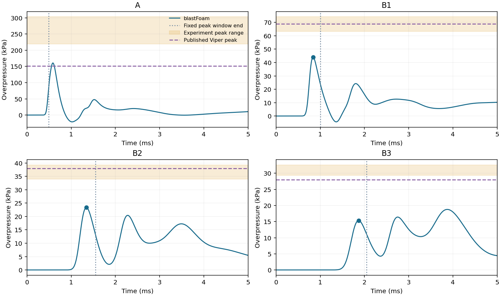

四点 0–5 ms 完整。A 的首次峰值未通过固定窗口判据。表中仅列通过判据的逐项 APE，两组 MAPE 均留空。C 集群作业 8942180。
首次峰值 MAPE 实测重复试验 — · 论文 Viper —。≤30% 为合格，≤15% 为较高精度。
实测分母取 Table A1 p.21 的固定重复试验，Viper 取 Table 6 p.13 的同尺度数值。

| 组 | 试次 | 测点 | 参考 kPa | 仿真 kPa | APE |
|---|---|---|---|---|---|
| 实测重复试验 | 1 | A | 303.05 | — | — |
| 实测重复试验 | 1 | B1 | 63.37 | 44.01 | 30.55% |
| 实测重复试验 | 1 | B2 | 36.28 | 23.34 | 35.66% |
| 实测重复试验 | 1 | B3 | 30.21 | 15.34 | 49.24% |
| 实测重复试验 | 2 | B1 | 74.22 | 44.01 | 40.70% |
| 实测重复试验 | 2 | B2 | 39.32 | 23.34 | 40.63% |
| 实测重复试验 | 2 | B3 | 32.62 | 15.34 | 52.99% |
| 实测重复试验 | 3 | A | 239.75 | — | — |
| 实测重复试验 | 3 | B1 | 70.96 | 44.01 | 37.98% |
| 实测重复试验 | 3 | B2 | 38.00 | 23.34 | 38.57% |
| 实测重复试验 | 3 | B3 | 29.35 | 15.34 | 47.74% |
| 实测重复试验 | 4 | A | 219.16 | — | — |
| 实测重复试验 | 4 | B1 | 66.42 | 44.01 | 33.73% |
| 实测重复试验 | 4 | B2 | 33.95 | 23.34 | 31.25% |
| 论文 Viper | 同尺度 | A | 151.00 | — | — |
| 论文 Viper | 同尺度 | B1 | 69.00 | 44.01 | 36.21% |
| 论文 Viper | 同尺度 | B2 | 38.00 | 23.34 | 38.57% |
| 论文 Viper | 同尺度 | B3 | 28.00 | 15.34 | 45.23% |